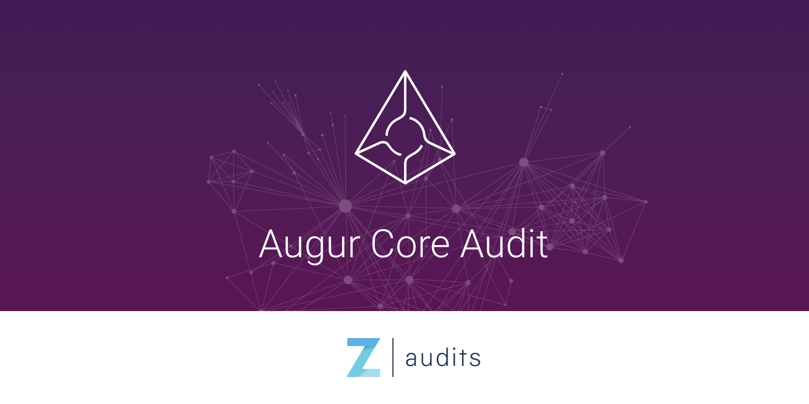
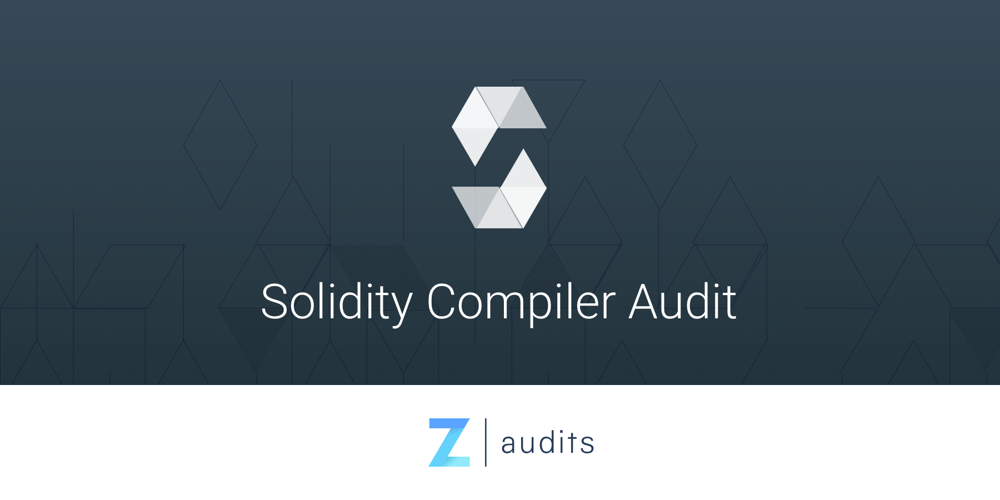
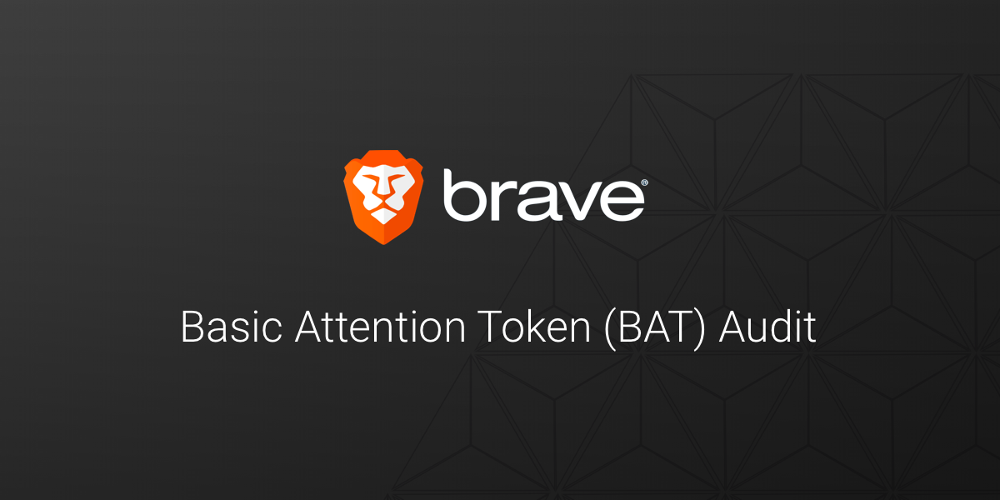

<style type="text/css">
	.audits-principal {
	  background-image: linear-gradient(297deg, #1b374a, #052431)!important;
	  height: auto!important;
		border-bottom: solid 0px transparent !important;
	}
	.see-all-btn {
	  opacity: 0.6;
	  font-family: Helvetica;
	  font-size: 11px;
	  letter-spacing: 1.5px;
	  text-align: center;
	  color: #3c3c3c;
	}
	.security-home {
		padding-bottom: 0 !important;
	}
	.blog-box {
		margin-bottom: -1px;
	  background: linear-gradient(to top, #f6f6f7 0%, #f6f6f7 40%, #052431 40%, #052431 44%, transparent 44%,transparent 100%)!important;
	}
	section.icon-partners {
		 min-height: 227px;
	}
  @media (max-width: 900px) {
    .blog-box img { margin: 10px 0; }
		.blog-box {background: linear-gradient(to top, #f6f6f7 0%, #f6f6f7 74%,transparent 74%,transparent 100%)!important;}
		#process div.last { margin-bottom: -80px; }
		.line-fix { padding-top: 3rem; }
		#process div p { font-size: 14px; }
		.request-audit-container img { margin: 0 0 34px 0; }
		.faq .last-p { padding-bottom: 0; }
		.faq h3 { font-size: 1.75em !important; }
		.icon-partners.no-padding { padding-bottom: 40px !important}
  }
	.reports img {
	  width: 95%;
		border-radius: 6px;
	  box-shadow: 0 5px 5px 0 rgba(0,0,0,0.14), 0 0px 6px 0 rgba(0,0,0,0.12), 0 3px 1px -2px rgba(0,0,0,0.2);
	}
	.faq {
		padding-bottom: 0;
	}
	.faq p {
		margin: auto;
		padding-bottom: 35px;
    border-bottom: solid 1.5px #d5d5d5;
	}
	.faq p.last-p {
    border-bottom: solid 0px transparent;
	}
	.faq h3 {
	  font-family: Helvetica;
	  font-size: 1.5em;
	  line-height: 1.25;
	  color: #4a4a4a;
	  text-align: left;
	  margin: 35px auto 10px auto;
	}

	.triangle-row-padding {
	  padding: 20px 15px;
	}
	#leading-projects {
	  background: linear-gradient(to top, #fff 0%,#fff 50%, #f7f7f8 50%, #f7f7f8 100%)!important;
	}
  .hero-background:before {
    background: url(/images/bg_triangle_security.svg);
  }
	.security-cards-section {
		background: linear-gradient(to top, white 0%,white 20%,#f7f7f8 10%,#f7f7f8 100%)!important;
	}
	.about-hero-subtitle {
		margin-bottom: 50px;
	}
	@media (max-width: 900px) {
		.about-hero-subtitle {
			margin-bottom: 25px;
		}
	}

</style>

<section class="audits-principal hero-background" id="principal">
  {% include nav.html %}
  <section class="security-home" id="home">
    <div class="container">
      <h1 class="home-title">Security audits for high-impact projects</h1>
      <p class="middle long about-hero-subtitle">Zeppelin verifies that your decentralized systems work as intended by performing an audit. Our engineers fully review your system’s architecture and codebase, then write a thorough report with actionable feedback for every issue found.</p>
    </div>
    <div class="row triangle-row-padding">
      <div class="container" id="process">
        {% include timeline.html%}
      </div>
    </div>
    <div class="row reports blog-box">
    	<p class="middle centered line-fix">Our most popular audit reports</p>
    	<br/>
      <div class="flex-box mobile-column container">
        <div class="centered">
            <a target="_blank" href="https://blog.zeppelin.solutions/augur-core-audit-244160d77c09"></a>
        </div>
        <div class="centered">
            <a target="_blank" href="https://blog.zeppelin.solutions/solidity-compiler-audit-8cfc0316a420"></a>
        </div>
        <div class="centered">
            <a target="_blank" href="https://blog.zeppelin.solutions/basic-attention-token-bat-audit-88bf196df64b"></a>
        </div>
      </div>
      <div class="centered">
      	<br/>
	      <a class="see-all-btn" href="https://blog.zeppelin.solutions/tagged/security" target="_blank">SEE ALL ></a>
	    </div>
    </div>
    </section>
</section>
<section class="row grey faq">
  <div class="container centered">
    <h2>FAQ</h2>
  </div>
  <div class="container">
    <h3 class="short">Am I ready for an audit?</h3>
    <p class="small short">Take a look at our <a target="_blank" href="https://blog.zeppelin.solutions/follow-this-quality-checklist-before-an-audit-8cc6a0e44845">Quality checklist to follow before an audit.</p>
	  
    <h3 class="short">What will I find in the audit report?</h3>
    <p class="small short">The report outlines potential problems in the code with actionable recommendations to guard against potential attack vectors, together with a general analysis of the systems’ dynamics reflecting both state-of-the-art security patterns and opportunities for improvement regarding the project's overall quality and maturity.</p>

    <h3 class="short">Is the report private?</h3>
    <p class="small short">Yes. We privately send the report to your team so they can address the issues we found. Publishing the report after your team fixes the issues is optional, but strongly recommended as a way of to contribute to the ecosystem’s security. We can work with you on a disclosure strategy.</p>

    <h3 class="short">Which technologies do you work with?</h3>
    <p class="small short last-p">We audit all kinds of decentralized systems, from smart contracts to compilers and applications. We have strong expertise in Solidity, Vyper, EVM assembly, JavaScript, Python, and Bitcoin Scripting code. We’re open to working with additional technologies if necessary.</p>
  </div>
</section>
<section class="row" id="leading-projects" style="padding-top: 30px">
  <div class="container centered">
    <h4>The world’s leading projects work with Zeppelin</h4>
  </div>
  {% include augur-quote.html %}
</section>
<section class="no-padding icon-partners">
	{% include partners.html %}
</section>
<section class="security-cards-section">
  <div class="container">
    <h2>Make your code more secure from day 1</h2>
    <p class="small short">Accelerate your development process by using fully-audited projects, trusted by the best decentralized applications. Make use of the ZeppelinOS framework and the OpenZeppelin package for standard functions in your applications.</p>
		{% include security-cards.html %}
	</div>
</section>
<section>
  <div class="container request-audit-container xs-column">
		<div class="img-box hide-on-med-and-up">
      
    </div>
    <div>
      <h2>Request a security audit</h2>
      <p class="small short opacity80">Our quotes and turnaround times vary according to the codebase’s length and complexity. We prioritize projects that base their code and architecture on OpenZeppelin or ZeppelinOS, fully-audited projects and trusted by the world leading projects.</p>
      <p class="small short opacity80">Send an email to <a href="mailto:contact@zeppelin.solutions">contact@zeppelin.solutions</a> including your project's website, links to your source code, and system documentation.</p>
    </div>
    <div class="img-box hide-on-small-only">
      
    </div>
  </div>
</section>
